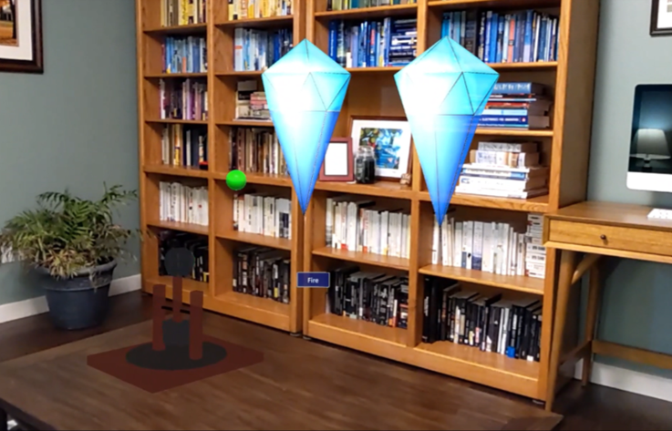
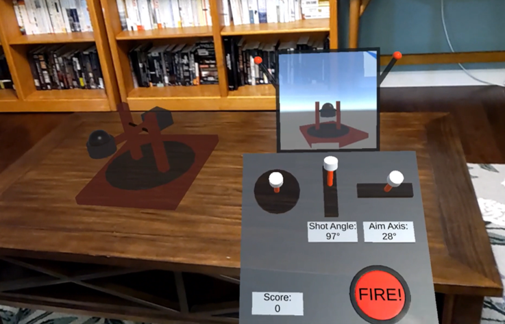
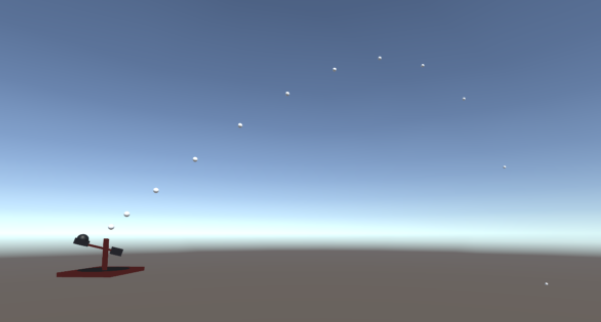
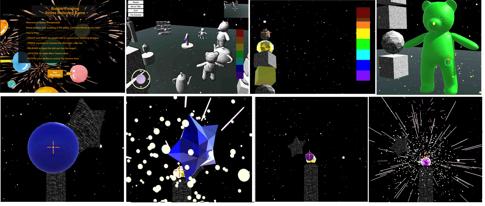
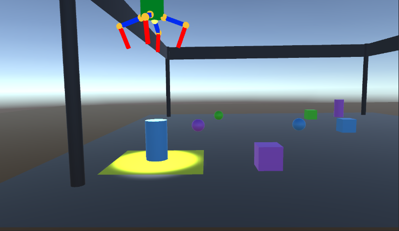
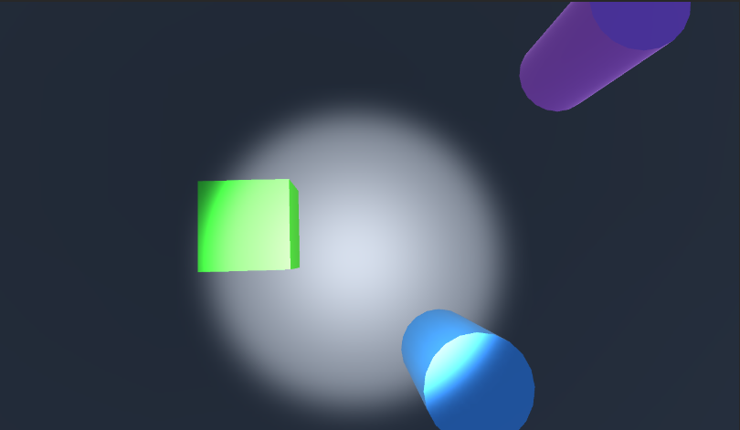

Christian Rolph
App Name: HoloLens Catapult
This app is a mixed reality catapult game where the user can drive a remote controlled catapult around their room and fire projectiles at as many blocks as they can within a given time limit. Before the game begins, the virtual blocks will be placed in integrated physical areas around the room (for example one block on the arm of a chair and another on a physical bookshelf). Once the game begins, the player will get a fixed amount of time to destroy as many blocks as they can by launching projectiles from the catapult. The catapult will have three generations of scene nodes: the catapult base - allowing the player to drive (translate), the swing frame - allowing the player to rotate the catapult arm, and the catapult arm - allowing a user to set the angle at which to pull back on the arm (further pull is a longer throw). The user will be able to manipulate the catapult using a controller. Once fired, a second camera will follow the launched projectile, and the player will be able to see that camera’s view on a hand-sized display using a hand gesture. This second camera view will help the player better see the accuracy of their launched projectiles.
Project Proposal Progress Demo Presentation Final Demo Presentation Final Demo Video Final Project Source
  
Source for Sound: "Small Piece Of Glass Shattering A2" sound effect from Fesliyan Studios
Results of initial tech investigations: Presentation (a much more detailed video here)
Developers Yiwei Tu
Liwen Fan
Luyao Wang
App Name: Bubble Painting Game
The game where players can enjoy shooting bubbles into anything and coloring the world! It can help players to release stress from fast-paced work and study life.
From Unity Asset Store: Sets - Gems, Sherbbs Particle Collection, Real Stars Skybox
Project proposal Progress Demo Presentation Final Demo Presentation
Results of initial tech investigations:Tangible UI Control: Presentation
Hatch Shaders: Presentation
Multipass Shaders: Presentation
Developers Arun Sarma
Sana Suse
App Name: ARCore Crane Game
A game in which the user controls a crane to pick up presents that are scattered around the user's environment within a time limit. The collectable objects that the user attempts to pick up with the crane move back and forth at random speeds; new presents are inserted into the scene every 2.5 seconds or after the crane picks up an object. The user rotates the crane by tapping on each of its segments and dragging their finger across the screen. The crane is scaled by doing a pinch-to-zoom gesture. The user sees what is in front of the crane's head via the second viewport which displays a camera view outwards from the crane's head. The crane's head also illuminates the presents via point lighting and the crane in general is lit via ARCore lighting estimation. Occlusion via ARCore Depth API is included to acheive depth perception, and can be enabled or disabled by the user. At the end of the game, the user's score (number of collected items) is displayed, and the user can start over.


From Unity Asset Store: Christmas Tree - POLYCRAFT Series
Project proposal Progress Demo Presentation Final Demo Presentation Final Project APK
Results of initial tech investigations: AR on mobile phone with ARCoreFrom Sana Presentation
From Arun Presentation
Developers Wen-Jui Cheng
Michael Hartman
VR Crane Machine
Want to play a crane machine that doesn't drop your prizes? Then welcome to VR Crane Machine! Move the crane with the controller joystick, try to grab a prize with the green button, and drop it into the prize pool with the red button! You can also walk around for a better view, or see from the perspective of the crane!
Project Proposal |
Project Source Code |
EXE File


From Ray Presentation
From Michael Presentation